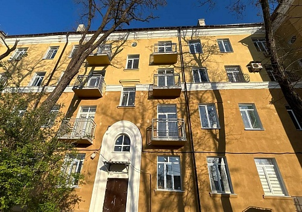

Все проекты
Жилой дом на ул. Артема в историческом центре Мариуполя

Объем повреждений: инженерные системы, несущие конструкции, кровля, дверные и оконные блоки.
Выполненные работы: капитальный ремонт наружных и внутренних стен, несущих конструкций кровли, лестниц и балконов. Устранены аварийные участки инженерных систем (отопления, водоснабжения, канализации, электроснабжения). Произведена замена старых оконных и дверных блоков, выполнен ремонт цоколя. Ремонтно-восстановительные мероприятия проведены в строгом соответствии с проектом и под надзором технических экспертов.